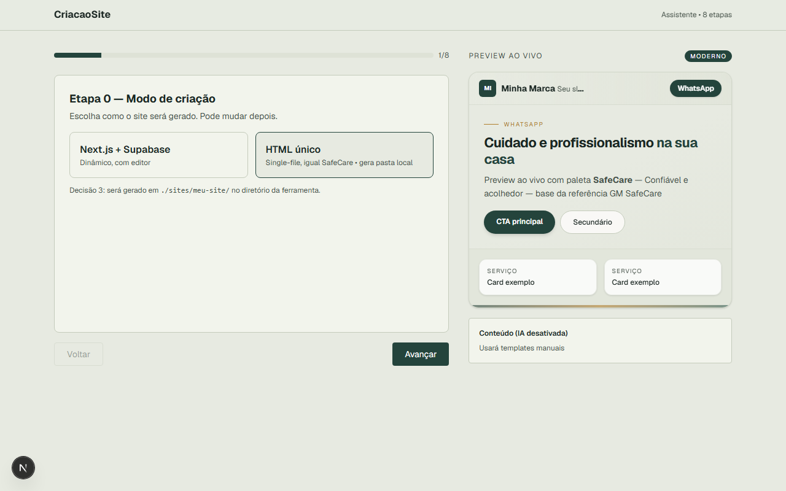
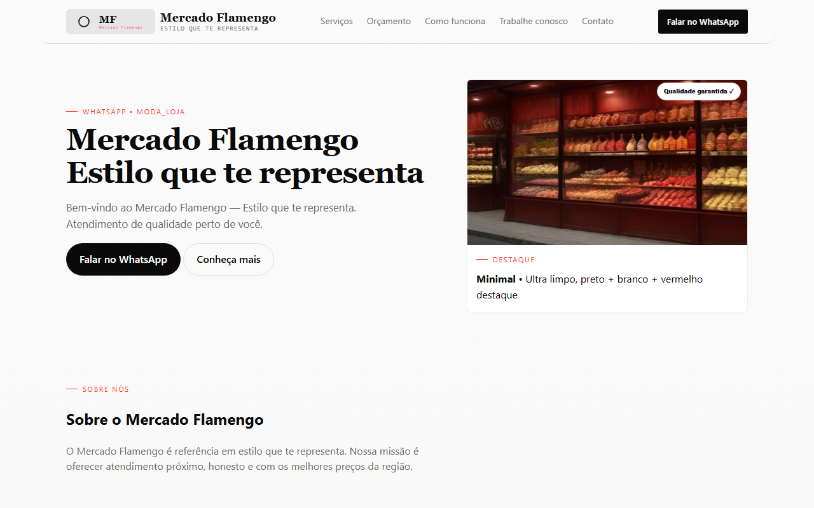
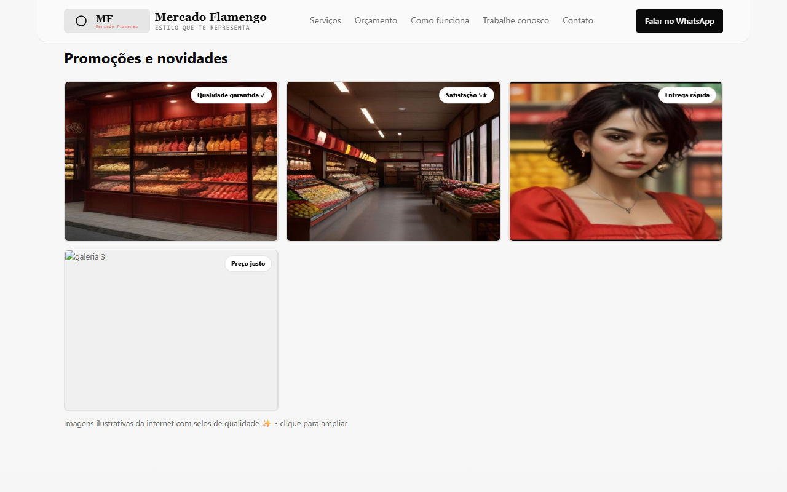
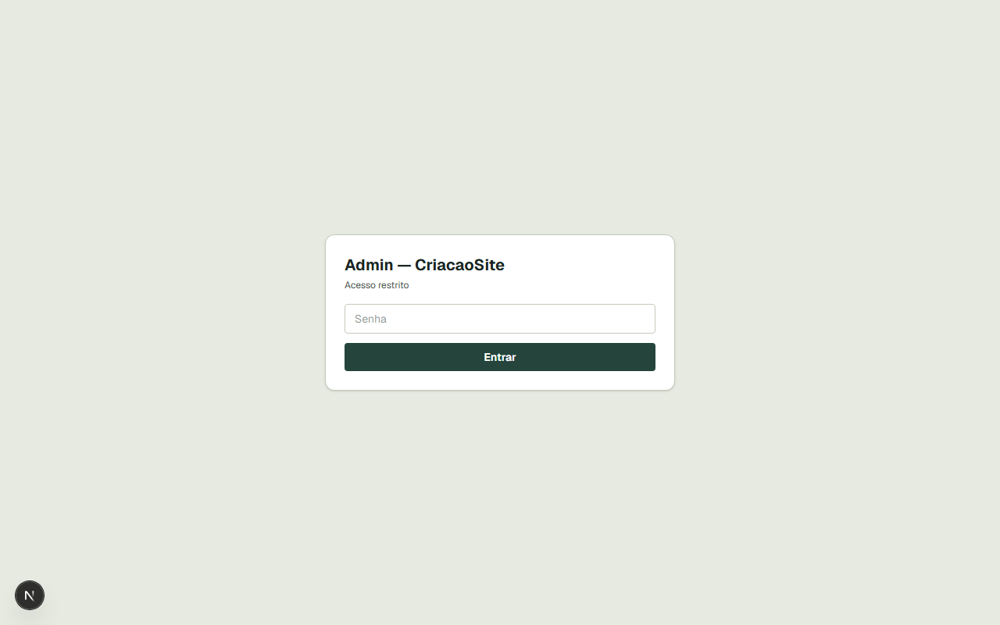
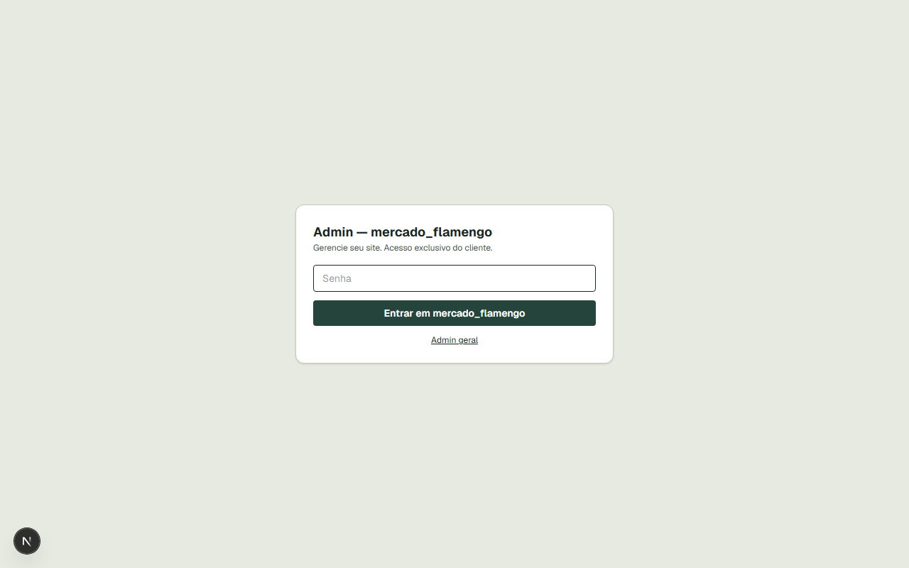

01O que é
Ferramenta para criar landing pages rápidas sem depender de WordPress: um wizard em 8 etapas gera um site estático
(sites/[slug]/index.html + style.css + script.js) com preview em /sites/[slug]/,
galeria com lightbox, e um admin exclusivo por site. Roda como serviço Docker único, com volume para os sites e deploy via ship.ps1.
02Funcionalidades
Wizard 8 etapas
Modo (Next/static), assistente, objetivo, segmento, identidade/paleta/layout, blocos, integrações e resumo — com preview ao vivo.
IA opcional
Gera lede, sobre, serviços e prompts de imagens via endpoint OpenAI compatível (ex: LM Studio local).
12 paletas + custom
Safecare, Ocean, Noir, Blush etc. + 2 cores customizáveis, 4 layouts (modern/bold/minimal/classic).
Blocos opt-in
Hero, Sobre, Serviços, Equipe, Galeria, Depoimentos, Como funciona, FAQ, Mapa, Formulário, Newsletter, Instagram.
Galeria com lightbox
Até 12 imagens (upload ou URL), com modal ampliado, navegação por setas, swipe e Esc para fechar.
Admin por site
Cada site gera /sites/[slug]/admin/ estático + rota dinâmica /sites/[slug]/admin para o cliente editar sozinho.
Admin central
/admin lista todos os sites, com senha dinâmica admin+DDMM (fuso America/Sao_Paulo).
Gestão completa
Imagens, comentários, Instagram, newsletter (SMTP), WhatsApp, destaque, serviços, Como funciona, currículo, equipe e sobre.
Export estático
Pasta sites/[slug]/ já contém admin/index.html — ao mandar para o cliente, o site.com/admin/ funciona offline.
03Tecnologias
04Capturas de tela
Wizard e preview




admin+DDMM.Admin por site


/sites/[slug]/ com admin em /sites/[slug]/admin/.